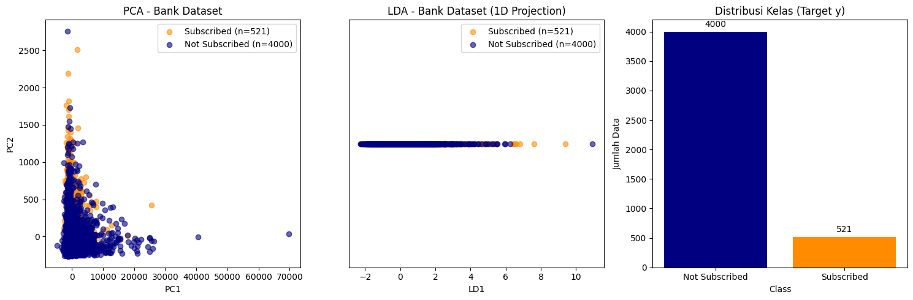

Preprocessing Data (Menyeimbangkan Data menggunakan SMOTE) Data Bank#
- Koneksi Ke Database#
import pandas as pd
import mysql.connector
# Koneksi ke MySQL database
conn = mysql.connector.connect(
host='localhost',
user='root',
password='',
database='bank'
)
# Ambil nama kolom
cursor = conn.cursor()
cursor.execute("SHOW COLUMNS FROM bank")
columns = cursor.fetchall()
# Ambil seluruh isi tabel
df_iris = pd.read_sql("SELECT * FROM bank", conn)
print("\nIsi tabel bank:")
print(df_iris)
# Tutup koneksi
conn.close()
---------------------------------------------------------------------------
MySQLInterfaceError Traceback (most recent call last)
File ~\AppData\Local\Programs\Python\Python311\Lib\site-packages\mysql\connector\connection_cext.py:354, in CMySQLConnection._open_connection(self)
353 try:
--> 354 self._cmysql.connect(**cnx_kwargs)
355 self._cmysql.converter_str_fallback = self._converter_str_fallback
MySQLInterfaceError: Access denied for user 'root'@'localhost' (using password: NO)
The above exception was the direct cause of the following exception:
ProgrammingError Traceback (most recent call last)
Cell In[1], line 6
3 import mysql.connector
5 # Koneksi ke MySQL database
----> 6 conn = mysql.connector.connect(
7 host='localhost',
8 user='root',
9 password='',
10 database='bank'
11 )
13 # Ambil nama kolom
14 cursor = conn.cursor()
File ~\AppData\Local\Programs\Python\Python311\Lib\site-packages\mysql\connector\pooling.py:322, in connect(*args, **kwargs)
319 raise ImportError(ERROR_NO_CEXT)
321 if CMySQLConnection and not use_pure:
--> 322 return CMySQLConnection(*args, **kwargs)
323 return MySQLConnection(*args, **kwargs)
File ~\AppData\Local\Programs\Python\Python311\Lib\site-packages\mysql\connector\connection_cext.py:142, in CMySQLConnection.__init__(self, **kwargs)
140 if kwargs:
141 try:
--> 142 self.connect(**kwargs)
143 except Exception:
144 self.close()
File ~\AppData\Local\Programs\Python\Python311\Lib\site-packages\mysql\connector\abstracts.py:1604, in MySQLConnectionAbstract.connect(self, **kwargs)
1601 self.config(**kwargs)
1603 self.disconnect()
-> 1604 self._open_connection()
1606 charset, collation = (
1607 kwargs.pop("charset", None),
1608 kwargs.pop("collation", None),
1609 )
1610 if charset or collation:
File ~\AppData\Local\Programs\Python\Python311\Lib\site-packages\mysql\connector\connection_cext.py:360, in CMySQLConnection._open_connection(self)
358 except MySQLInterfaceError as err:
359 if hasattr(err, "errno"):
--> 360 raise get_mysql_exception(
361 err.errno, msg=err.msg, sqlstate=err.sqlstate
362 ) from err
363 raise InterfaceError(str(err)) from err
365 self._do_handshake()
ProgrammingError: 1045 (28000): Access denied for user 'root'@'localhost' (using password: NO)
- Visualisi Data menggunakan PCA#
# --- VISUALISASI DATA BANK (PCA, LDA, DAN DISTRIBUSI KELAS) ---
from sklearn.preprocessing import LabelEncoder
from sklearn.decomposition import PCA
from sklearn.discriminant_analysis import LinearDiscriminantAnalysis
import matplotlib.pyplot as plt
import numpy as np
# Duplikat dataframe (biar aman)
df_bank = df_iris.copy()
# ==========================
# 1. PRA-PROSES DATA
# ==========================
# Pisahkan fitur numerik dan kategorikal
numeric_cols = ['age', 'balance', 'duration', 'campaign', 'pdays', 'previous']
categorical_cols = ['job', 'marital', 'education', 'default', 'housing', 'loan', 'contact', 'month', 'poutcome']
# Encode data kategorikal
le = LabelEncoder()
for col in categorical_cols:
df_bank[col] = le.fit_transform(df_bank[col])
# Encode label target (kolom y)
df_bank['y'] = df_bank['y'].map({'yes': 1, 'no': 0})
# Siapkan data fitur dan target
X_db = df_bank[numeric_cols + categorical_cols].values
y_db = df_bank['y'].values
# ==========================
# 2. PCA DAN LDA
# ==========================
pca_db = PCA(n_components=2)
X_r_db = pca_db.fit_transform(X_db)
lda_db = LinearDiscriminantAnalysis(n_components=1)
X_r2_db = lda_db.fit_transform(X_db, y_db)
# ==========================
# 3. VISUALISASI
# ==========================
plt.figure(figsize=(15, 5))
colors = ['darkorange', 'navy']
# --- Plot PCA ---
plt.subplot(1, 3, 1)
for color, i, target_name in zip(colors, [1, 0], ['Subscribed', 'Not Subscribed']):
mask = y_db == i
plt.scatter(X_r_db[mask, 0], X_r_db[mask, 1], color=color, alpha=0.6,
label=f"{target_name} (n={np.sum(mask)})")
plt.legend(loc="best", shadow=False, scatterpoints=1)
plt.title("PCA - Bank Dataset")
plt.xlabel("PC1")
plt.ylabel("PC2")
# --- Plot LDA ---
plt.subplot(1, 3, 2)
for color, i, target_name in zip(colors, [1, 0], ['Subscribed', 'Not Subscribed']):
mask = y_db == i
plt.scatter(X_r2_db[mask, 0], np.zeros_like(X_r2_db[mask]), color=color, alpha=0.6,
label=f"{target_name} (n={np.sum(mask)})")
plt.legend(loc="best", shadow=False, scatterpoints=1)
plt.title("LDA - Bank Dataset (1D Projection)")
plt.xlabel("LD1")
plt.yticks([])
# --- Plot distribusi kelas ---
plt.subplot(1, 3, 3)
class_counts = df_bank['y'].value_counts()
plt.bar(['Not Subscribed', 'Subscribed'], class_counts.values, color=['navy', 'darkorange'])
plt.title("Distribusi Kelas (Target y)")
plt.xlabel("Class")
plt.ylabel("Jumlah Data")
for i, v in enumerate(class_counts.values):
plt.text(i, v + 50, str(v), ha='center', va='bottom')
plt.tight_layout()
plt.show()
print(f"\nExplained variance ratio (PCA): {pca_db.explained_variance_ratio_}")

Explained variance ratio (PCA): [0.99149726 0.0073897 ]
- Menggunakan SMOTE untuk penyeimbangan Data#
# === PENYEIMBANGAN DATA BANK MENGGUNAKAN SMOTE ===
import pandas as pd
import numpy as np
import matplotlib.pyplot as plt
import mysql.connector
from imblearn.over_sampling import SMOTE
from collections import Counter
from sklearn.preprocessing import LabelEncoder
# ==========================
# 1. KONEKSI KE DATABASE
# ==========================
conn = mysql.connector.connect(
host='localhost',
user='root',
password='',
database='bank' # ganti sesuai nama database kamu
)
# Ambil seluruh data dari tabel bank
df = pd.read_sql("SELECT * FROM bank", conn)
conn.close()
# ==========================
# 2. PRA-PROSES DATA
# ==========================
# Encode kolom kategorikal agar bisa diolah SMOTE
categorical_cols = ['job', 'marital', 'education', 'default', 'housing',
'loan', 'contact', 'month', 'poutcome']
le = LabelEncoder()
for col in categorical_cols:
df[col] = le.fit_transform(df[col])
# Encode label target (yes/no → 1/0)
df['y'] = df['y'].map({'yes': 1, 'no': 0})
# ==========================
# 3. PERSIAPAN DATA UNTUK SMOTE
# ==========================
X = df.drop('y', axis=1) # Fitur
y = df['y'] # Target
print("=== ANALISIS DATA SEBELUM SMOTE ===")
print("Distribusi kelas sebelum SMOTE:")
print(Counter(y))
print(f"Total sampel sebelum SMOTE: {len(y)}")
print(f"Jumlah fitur: {X.shape[1]}")
# ==========================
# 4. SMOTE
# ==========================
smote = SMOTE(random_state=42)
X_resampled, y_resampled = smote.fit_resample(X, y)
print("\n=== ANALISIS DATA SETELAH SMOTE ===")
print("Distribusi kelas setelah SMOTE:")
print(Counter(y_resampled))
print(f"Total sampel setelah SMOTE: {len(y_resampled)}")
# ==========================
# 5. VISUALISASI DISTRIBUSI KELAS
# ==========================
plt.figure(figsize=(6, 4))
plt.bar(['Before SMOTE', 'After SMOTE'], [Counter(y)[1], Counter(y_resampled)[1]],
color=['darkorange', 'navy'])
plt.title('Perbandingan Jumlah Kelas (Target y = "yes")')
plt.ylabel('Jumlah Sampel')
for i, v in enumerate([Counter(y)[1], Counter(y_resampled)[1]]):
plt.text(i, v + 50, str(v), ha='center', va='bottom')
plt.show()
C:\Users\ahabi\AppData\Local\Temp\ipykernel_29720\3287878904.py:22: UserWarning: pandas only supports SQLAlchemy connectable (engine/connection) or database string URI or sqlite3 DBAPI2 connection. Other DBAPI2 objects are not tested. Please consider using SQLAlchemy.
df = pd.read_sql("SELECT * FROM bank", conn)
=== ANALISIS DATA SEBELUM SMOTE ===
Distribusi kelas sebelum SMOTE:
Counter({0: 4000, 1: 521})
Total sampel sebelum SMOTE: 4521
Jumlah fitur: 16
=== ANALISIS DATA SETELAH SMOTE ===
Distribusi kelas setelah SMOTE:
Counter({0: 4000, 1: 4000})
Total sampel setelah SMOTE: 8000
from imblearn.over_sampling import SMOTE
from collections import Counter
import pandas as pd
# === PENERAPAN SMOTE ===
print("\n=== PENERAPAN SMOTE ===")
# Pisahkan fitur dan target
X = df.drop('y', axis=1) # ganti 'y' dengan nama kolom target kamu
y = df['y']
# Jika ada kolom kategorikal, ubah ke numerik dulu (One-Hot Encoding)
X_encoded = pd.get_dummies(X, drop_first=True)
# Inisialisasi SMOTE
smote = SMOTE(random_state=42)
# Terapkan SMOTE
X_resampled, y_resampled = smote.fit_resample(X_encoded, y)
print("Distribusi kelas setelah SMOTE:")
print(Counter(y_resampled))
print(f"Total sampel setelah SMOTE: {len(y_resampled)}")
# Konversi hasil SMOTE ke DataFrame baru
df_resampled = pd.DataFrame(X_resampled, columns=X_encoded.columns)
df_resampled['y'] = y_resampled
print("\nContoh data sintetis yang dihasilkan SMOTE:")
print(df_resampled.tail(10))
=== PENERAPAN SMOTE ===
Distribusi kelas setelah SMOTE:
Counter({0: 4000, 1: 4000})
Total sampel setelah SMOTE: 8000
Contoh data sintetis yang dihasilkan SMOTE:
age job marital education default balance housing loan contact \
7990 58 6 0 1 0 462 0 0 0
7991 33 5 0 1 0 887 1 0 0
7992 45 0 1 1 0 2388 1 0 0
7993 51 8 1 1 0 2248 0 0 0
7994 41 0 0 1 0 943 0 0 0
7995 54 4 1 1 0 2759 0 0 0
7996 34 8 0 1 0 959 0 0 0
7997 41 3 1 1 0 523 1 0 1
7998 57 4 0 2 0 0 0 0 0
7999 27 1 2 1 0 215 1 0 1
day month duration campaign pdays previous poutcome y
7990 13 9 494 1 92 1 1 1
7991 10 2 774 1 183 5 0 1
7992 4 4 256 1 191 2 0 1
7993 9 5 160 2 56 1 1 1
7994 29 4 926 1 -1 0 3 1
7995 15 1 165 1 -1 0 3 1
7996 26 1 1354 3 172 2 2 1
7997 18 6 682 6 -1 0 3 1
7998 15 9 218 1 -1 0 3 1
7999 19 8 438 1 -1 0 3 1
from collections import Counter
import matplotlib.pyplot as plt
import pandas as pd
# === VISUALISASI HASIL SMOTE ===
print("\n=== VISUALISASI HASIL SMOTE ===")
# Hitung distribusi kelas sebelum dan sesudah SMOTE
before_counts = Counter(y)
after_counts = Counter(y_resampled)
# Nama kelas (misalnya 'yes' dan 'no')
class_names = list(before_counts.keys())
# Nilai jumlah masing-masing kelas
before_values = [before_counts[c] for c in class_names]
after_values = [after_counts[c] for c in class_names]
# Buat subplot untuk perbandingan
fig, axes = plt.subplots(1, 2, figsize=(14, 6))
# --- Plot Sebelum SMOTE ---
bars1 = axes[0].bar(class_names, before_values, color=['#1f77b4', '#ff7f0e'])
axes[0].set_title('Distribusi Kelas Sebelum SMOTE', fontsize=14, fontweight='bold')
axes[0].set_ylabel('Jumlah Sampel')
axes[0].set_xlabel('Kelas (y)')
# Tambahkan label di atas bar
for bar, value in zip(bars1, before_values):
axes[0].text(bar.get_x() + bar.get_width()/2, bar.get_height() + 2,
str(value), ha='center', va='bottom', fontsize=11, fontweight='bold')
# --- Plot Setelah SMOTE ---
bars2 = axes[1].bar(class_names, after_values, color=['#1f77b4', '#ff7f0e'])
axes[1].set_title('Distribusi Kelas Setelah SMOTE', fontsize=14, fontweight='bold')
axes[1].set_ylabel('Jumlah Sampel')
axes[1].set_xlabel('Kelas (y)')
# Tambahkan label di atas bar
for bar, value in zip(bars2, after_values):
axes[1].text(bar.get_x() + bar.get_width()/2, bar.get_height() + 2,
str(value), ha='center', va='bottom', fontsize=11, fontweight='bold')
# Tata letak agar rapi
plt.tight_layout()
plt.show()
# === TABEL PERBANDINGAN ===
print("\nTabel Perbandingan:")
comparison_df = pd.DataFrame({
'Kelas': class_names,
'Sebelum SMOTE': before_values,
'Setelah SMOTE': after_values,
'Sampel Sintetis Ditambahkan': [
after_values[i] - before_values[i] for i in range(len(class_names))
]
})
print(comparison_df.to_string(index=False))
=== VISUALISASI HASIL SMOTE ===
Tabel Perbandingan:
Kelas Sebelum SMOTE Setelah SMOTE Sampel Sintetis Ditambahkan
0 4000 4000 0
1 521 4000 3479
- Klasifikasi Data menggunakan Bagging Classifier dan tanpa Bagging#
import pandas as pd
import numpy as np
import mysql.connector
from sklearn.model_selection import train_test_split
from sklearn.preprocessing import LabelEncoder, StandardScaler
from sklearn.naive_bayes import GaussianNB
from sklearn.svm import SVC
from sklearn.metrics import classification_report, confusion_matrix, accuracy_score
from imblearn.over_sampling import SMOTE
# --- 1. KONEKSI KE DATABASE ---
db = mysql.connector.connect(
host="localhost",
user="root",
password="", # ubah jika ada password
database="bank"
)
# --- 2. AMBIL DATA DARI TABEL ---
query = "SELECT * FROM bank"
df = pd.read_sql(query, db)
print("Jumlah data:", len(df))
print(df.head())
# --- 3. ENCODING DATA KATEGORIK ---
le = LabelEncoder()
for col in df.select_dtypes(include=['object']).columns:
df[col] = le.fit_transform(df[col])
# --- 4. PISAHKAN FITUR DAN TARGET ---
X = df.drop('y', axis=1)
y = df['y']
# --- 5. STANDARISASI DATA ---
scaler = StandardScaler()
X_scaled = scaler.fit_transform(X)
# --- 6. SPLIT DATA TRAIN-TEST ---
X_train, X_test, y_train, y_test = train_test_split(X_scaled, y, test_size=0.3, random_state=42, stratify=y)
# =====================
# SEBELUM SMOTE
# =====================
print("\n=== KLASIFIKASI SEBELUM SMOTE ===")
# --- Naive Bayes ---
nb = GaussianNB()
nb.fit(X_train, y_train)
y_pred_nb = nb.predict(X_test)
print("\n[Naive Bayes - Sebelum SMOTE]")
print("Akurasi :", accuracy_score(y_test, y_pred_nb))
print(confusion_matrix(y_test, y_pred_nb))
print(classification_report(y_test, y_pred_nb))
# --- SVM ---
svm = SVC(kernel='rbf', random_state=42)
svm.fit(X_train, y_train)
y_pred_svm = svm.predict(X_test)
print("\n[SVM - Sebelum SMOTE]")
print("Akurasi :", accuracy_score(y_test, y_pred_svm))
print(confusion_matrix(y_test, y_pred_svm))
print(classification_report(y_test, y_pred_svm))
# =====================
# SESUDAH SMOTE
# =====================
print("\n=== KLASIFIKASI SESUDAH SMOTE ===")
sm = SMOTE(random_state=42)
X_res, y_res = sm.fit_resample(X_train, y_train)
# --- Naive Bayes ---
nb_smote = GaussianNB()
nb_smote.fit(X_res, y_res)
y_pred_nb_smote = nb_smote.predict(X_test)
print("\n[Naive Bayes - Setelah SMOTE]")
print("Akurasi :", accuracy_score(y_test, y_pred_nb_smote))
print(confusion_matrix(y_test, y_pred_nb_smote))
print(classification_report(y_test, y_pred_nb_smote))
# --- SVM ---
svm_smote = SVC(kernel='rbf', random_state=42)
svm_smote.fit(X_res, y_res)
y_pred_svm_smote = svm_smote.predict(X_test)
print("\n[SVM - Setelah SMOTE]")
print("Akurasi :", accuracy_score(y_test, y_pred_svm_smote))
print(confusion_matrix(y_test, y_pred_svm_smote))
print(classification_report(y_test, y_pred_svm_smote))
C:\Users\ahabi\AppData\Local\Temp\ipykernel_32900\4280578904.py:21: UserWarning: pandas only supports SQLAlchemy connectable (engine/connection) or database string URI or sqlite3 DBAPI2 connection. Other DBAPI2 objects are not tested. Please consider using SQLAlchemy.
df = pd.read_sql(query, db)
Jumlah data: 4521
age job marital education default balance housing loan \
0 30 unemployed married primary no 1787 no no
1 33 services married secondary no 4789 yes yes
2 35 management single tertiary no 1350 yes no
3 30 management married tertiary no 1476 yes yes
4 59 blue-collar married secondary no 0 yes no
contact day month duration campaign pdays previous poutcome y
0 cellular 19 oct 79 1 -1 0 unknown no
1 cellular 11 may 220 1 339 4 failure no
2 cellular 16 apr 185 1 330 1 failure no
3 unknown 3 jun 199 4 -1 0 unknown no
4 unknown 5 may 226 1 -1 0 unknown no
=== KLASIFIKASI SEBELUM SMOTE ===
[Naive Bayes - Sebelum SMOTE]
Akurasi : 0.8260869565217391
[[1058 143]
[ 93 63]]
precision recall f1-score support
0 0.92 0.88 0.90 1201
1 0.31 0.40 0.35 156
accuracy 0.83 1357
macro avg 0.61 0.64 0.62 1357
weighted avg 0.85 0.83 0.84 1357
[SVM - Sebelum SMOTE]
Akurasi : 0.8916728076639646
[[1188 13]
[ 134 22]]
precision recall f1-score support
0 0.90 0.99 0.94 1201
1 0.63 0.14 0.23 156
accuracy 0.89 1357
macro avg 0.76 0.57 0.59 1357
weighted avg 0.87 0.89 0.86 1357
=== KLASIFIKASI SESUDAH SMOTE ===
[Naive Bayes - Setelah SMOTE]
Akurasi : 0.6941783345615328
[[823 378]
[ 37 119]]
precision recall f1-score support
0 0.96 0.69 0.80 1201
1 0.24 0.76 0.36 156
accuracy 0.69 1357
macro avg 0.60 0.72 0.58 1357
weighted avg 0.87 0.69 0.75 1357
[SVM - Setelah SMOTE]
Akurasi : 0.8356669123065585
[[1034 167]
[ 56 100]]
precision recall f1-score support
0 0.95 0.86 0.90 1201
1 0.37 0.64 0.47 156
accuracy 0.84 1357
macro avg 0.66 0.75 0.69 1357
weighted avg 0.88 0.84 0.85 1357
# === IMPORT LIBRARY ===
import pandas as pd
import numpy as np
import matplotlib.pyplot as plt
import seaborn as sns
import mysql.connector
from collections import Counter
# Model & evaluasi
from sklearn.model_selection import train_test_split
from sklearn.preprocessing import LabelEncoder, StandardScaler
from sklearn.naive_bayes import GaussianNB
from sklearn.svm import SVC
from sklearn.ensemble import BaggingClassifier
from sklearn.metrics import classification_report, confusion_matrix, accuracy_score
from imblearn.over_sampling import SMOTE
# === 1. KONEKSI KE DATABASE & LOAD DATASET ===
conn = mysql.connector.connect(
host='localhost',
user='root',
password='',
database='bank' # ganti sesuai nama database kamu
)
df = pd.read_sql("SELECT * FROM bank", conn) # tabel 'bank'
conn.close()
print(f"Jumlah data: {len(df)}")
print(df.head())
# === 2. PERSIAPAN DATA ===
# Encode semua kolom kategorikal
le = LabelEncoder()
for col in df.select_dtypes(include=['object']).columns:
df[col] = le.fit_transform(df[col])
# Pisahkan fitur dan target
X = df.drop('y', axis=1)
y = df['y']
print("\nDistribusi kelas sebelum SMOTE:", Counter(y))
# === 3. SPLIT DATA SEBELUM SMOTE ===
X_train, X_test, y_train, y_test = train_test_split(
X, y, test_size=0.3, random_state=42, stratify=y
)
# Standarisasi agar model SVM lebih stabil
scaler = StandardScaler()
X_train = scaler.fit_transform(X_train)
X_test = scaler.transform(X_test)
# === 4. KLASIFIKASI SEBELUM SMOTE (BAGGING) ===
print("\n=== KLASIFIKASI SEBELUM SMOTE (BAGGING) ===")
## Bagging + Naive Bayes
bag_nb = BaggingClassifier(estimator=GaussianNB(), n_estimators=10, random_state=42)
bag_nb.fit(X_train, y_train)
y_pred_nb = bag_nb.predict(X_test)
acc_nb_before = accuracy_score(y_test, y_pred_nb)
print("\n[Naive Bayes (Bagging) - Sebelum SMOTE]")
print(f"Akurasi : {acc_nb_before}")
print(confusion_matrix(y_test, y_pred_nb))
print(classification_report(y_test, y_pred_nb))
## Bagging + SVM
bag_svm = BaggingClassifier(estimator=SVC(kernel="linear", probability=True, random_state=42),
n_estimators=10, random_state=42)
bag_svm.fit(X_train, y_train)
y_pred_svm = bag_svm.predict(X_test)
acc_svm_before = accuracy_score(y_test, y_pred_svm)
print("\n[SVM (Bagging) - Sebelum SMOTE]")
print(f"Akurasi : {acc_svm_before}")
print(confusion_matrix(y_test, y_pred_svm))
print(classification_report(y_test, y_pred_svm))
# === 5. SMOTE ===
sm = SMOTE(random_state=42)
X_res, y_res = sm.fit_resample(X, y)
print("\nDistribusi kelas setelah SMOTE:", Counter(y_res))
# Split ulang data setelah SMOTE
X_train_res, X_test_res, y_train_res, y_test_res = train_test_split(
X_res, y_res, test_size=0.3, random_state=42, stratify=y_res
)
# Standarisasi ulang
X_train_res = scaler.fit_transform(X_train_res)
X_test_res = scaler.transform(X_test_res)
# === 6. KLASIFIKASI SETELAH SMOTE (BAGGING) ===
print("\n=== KLASIFIKASI SETELAH SMOTE (BAGGING) ===")
## Bagging + Naive Bayes
bag_nb_res = BaggingClassifier(estimator=GaussianNB(), n_estimators=10, random_state=42)
bag_nb_res.fit(X_train_res, y_train_res)
y_pred_nb_res = bag_nb_res.predict(X_test_res)
acc_nb_after = accuracy_score(y_test_res, y_pred_nb_res)
print("\n[Naive Bayes (Bagging) - Setelah SMOTE]")
print(f"Akurasi : {acc_nb_after}")
print(confusion_matrix(y_test_res, y_pred_nb_res))
print(classification_report(y_test_res, y_pred_nb_res))
## Bagging + SVM
bag_svm_res = BaggingClassifier(estimator=SVC(kernel="linear", probability=True, random_state=42),
n_estimators=10, random_state=42)
bag_svm_res.fit(X_train_res, y_train_res)
y_pred_svm_res = bag_svm_res.predict(X_test_res)
acc_svm_after = accuracy_score(y_test_res, y_pred_svm_res)
print("\n[SVM (Bagging) - Setelah SMOTE]")
print(f"Akurasi : {acc_svm_after}")
print(confusion_matrix(y_test_res, y_pred_svm_res))
print(classification_report(y_test_res, y_pred_svm_res))
# === 7. RINGKASAN PERBANDINGAN ===
results = pd.DataFrame({
"Model": ["Naive Bayes (Bagging)", "Naive Bayes (Bagging)", "SVM (Bagging)", "SVM (Bagging)"],
"Kondisi": ["Sebelum SMOTE", "Setelah SMOTE", "Sebelum SMOTE", "Setelah SMOTE"],
"Akurasi": [acc_nb_before, acc_nb_after, acc_svm_before, acc_svm_after]
})
print("\n=== PERBANDINGAN AKURASI (BAGGING) ===")
print(results)
C:\Users\ahabi\AppData\Local\Temp\ipykernel_32900\3275926699.py:25: UserWarning: pandas only supports SQLAlchemy connectable (engine/connection) or database string URI or sqlite3 DBAPI2 connection. Other DBAPI2 objects are not tested. Please consider using SQLAlchemy.
df = pd.read_sql("SELECT * FROM bank", conn) # tabel 'bank'
Jumlah data: 4521
age job marital education default balance housing loan \
0 30 unemployed married primary no 1787 no no
1 33 services married secondary no 4789 yes yes
2 35 management single tertiary no 1350 yes no
3 30 management married tertiary no 1476 yes yes
4 59 blue-collar married secondary no 0 yes no
contact day month duration campaign pdays previous poutcome y
0 cellular 19 oct 79 1 -1 0 unknown no
1 cellular 11 may 220 1 339 4 failure no
2 cellular 16 apr 185 1 330 1 failure no
3 unknown 3 jun 199 4 -1 0 unknown no
4 unknown 5 may 226 1 -1 0 unknown no
Distribusi kelas sebelum SMOTE: Counter({0: 4000, 1: 521})
=== KLASIFIKASI SEBELUM SMOTE (BAGGING) ===
[Naive Bayes (Bagging) - Sebelum SMOTE]
Akurasi : 0.8165070007369197
[[1047 154]
[ 95 61]]
precision recall f1-score support
0 0.92 0.87 0.89 1201
1 0.28 0.39 0.33 156
accuracy 0.82 1357
macro avg 0.60 0.63 0.61 1357
weighted avg 0.84 0.82 0.83 1357
[SVM (Bagging) - Sebelum SMOTE]
Akurasi : 0.8857774502579219
[[1197 4]
[ 151 5]]
precision recall f1-score support
0 0.89 1.00 0.94 1201
1 0.56 0.03 0.06 156
accuracy 0.89 1357
macro avg 0.72 0.51 0.50 1357
weighted avg 0.85 0.89 0.84 1357
Distribusi kelas setelah SMOTE: Counter({0: 4000, 1: 4000})
=== KLASIFIKASI SETELAH SMOTE (BAGGING) ===
[Naive Bayes (Bagging) - Setelah SMOTE]
Akurasi : 0.7408333333333333
[[ 660 540]
[ 82 1118]]
precision recall f1-score support
0 0.89 0.55 0.68 1200
1 0.67 0.93 0.78 1200
accuracy 0.74 2400
macro avg 0.78 0.74 0.73 2400
weighted avg 0.78 0.74 0.73 2400
[SVM (Bagging) - Setelah SMOTE]
Akurasi : 0.8395833333333333
[[ 992 208]
[ 177 1023]]
precision recall f1-score support
0 0.85 0.83 0.84 1200
1 0.83 0.85 0.84 1200
accuracy 0.84 2400
macro avg 0.84 0.84 0.84 2400
weighted avg 0.84 0.84 0.84 2400
=== PERBANDINGAN AKURASI (BAGGING) ===
Model Kondisi Akurasi
0 Naive Bayes (Bagging) Sebelum SMOTE 0.816507
1 Naive Bayes (Bagging) Setelah SMOTE 0.740833
2 SVM (Bagging) Sebelum SMOTE 0.885777
3 SVM (Bagging) Setelah SMOTE 0.839583